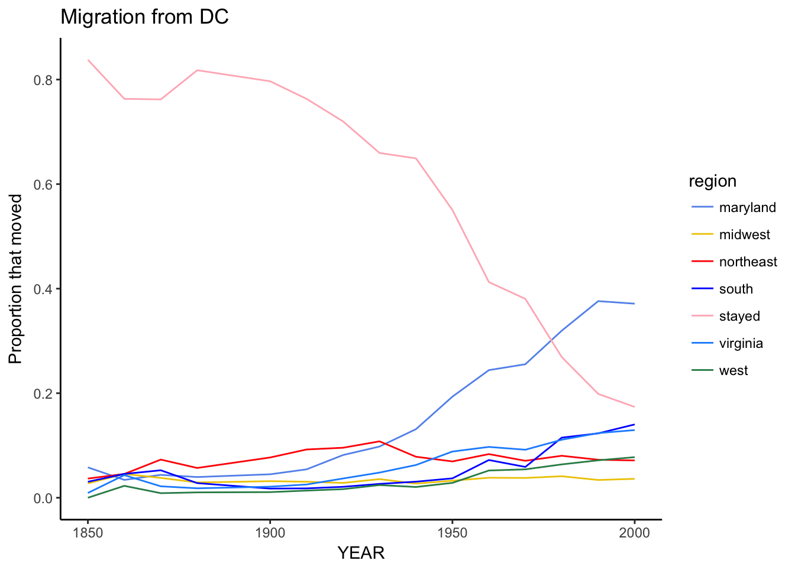
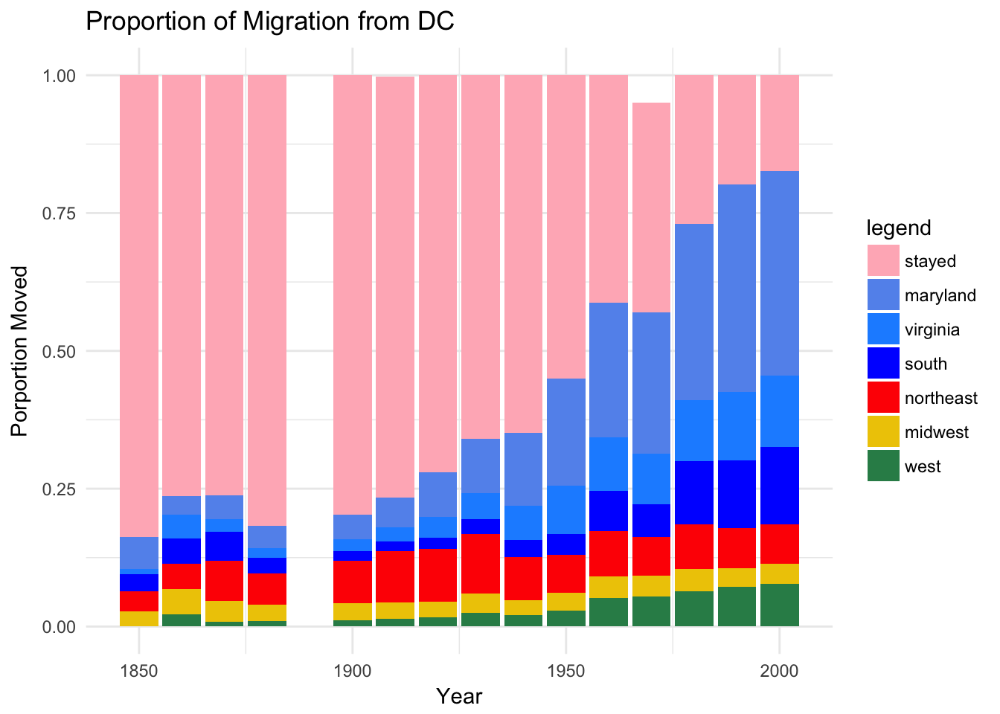
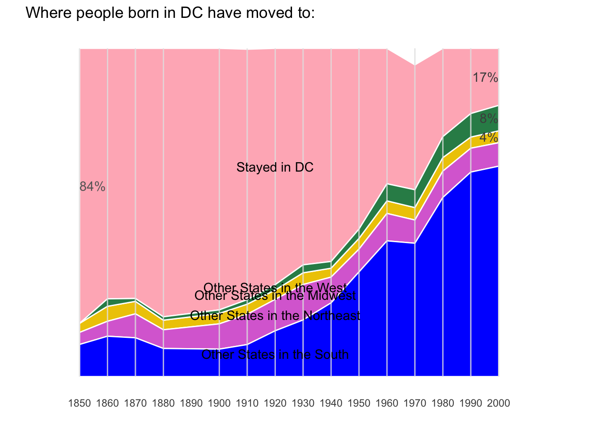

In this lab, we are exploring DC migration using data from the U.S. Census.Our goal is to imitate and revise the visualizations from the NYTimes.We are creating displays showing where people born in DC lived in the decennial years between 1850 and 2000 (data from 1890 is missing).
First we load in the data sets. We have two data sets, one containing the information for the census regions and another containing information for the census regions with Maryland and Virginia separated out. Then we calculate the proportions that moved to each of the cenusus regions and Maryland and Virginia. Then we establish the decades within the dataset.
## line graph
d <- ggplot(stateMigration, aes(x=YEAR, y=propMoved)) +
geom_line(aes(group=region,color=region)) +
labs(title="Migration from DC",y="Proportion that moved") +
theme_classic()
d + scale_color_manual(values=c("cornflowerblue", "gold2", "red", "blue", "lightpink", "dodgerblue", "seagreen"))
This display shows a line graph of migration from DC on decennial years. Maryland and Virginia have been separated out from the southern region because they are the most popular individual states for DC-born individuals to move to.
stateMigration$region <- factor(stateMigration$region, levels = c("stayed", "maryland", "virginia", "south", "northeast", "midwest", "west"))
ggplot(stateMigration, aes(x = YEAR, y = propMoved, fill = region)) +
geom_bar(stat = "identity")+
labs(title="Proportion of Migration from DC",
x ="Year", y = "Porportion Moved") +
scale_fill_manual("legend", values = c("stayed" = "lightpink", "midwest" = "gold2", "south" = "blue", "virginia"="dodgerblue", "maryland"="cornflowerblue", "northeast"="red", "west"="seagreen"))+
theme_minimal()
This graph displays the proportion of people migrating from DC on decennial years. Note, the data from 1890 is missing. Maryland and Virginia have been separated out.
g <- ggplot(DCMigration,aes(YEAR)) +
geom_point(data=decade,aes(x=YEAR,y=height),color="white")+
geom_ribbon(aes(ymin=lowHeight,ymax=highHeight,group=region,fill=region),color="white")+
theme_classic()+theme(axis.line.y=element_blank())+
geom_segment(data=decade, aes(x=YEAR,xend=YEAR),y=0,yend=1,color="grey90",alpha=0.1)+
scale_x_continuous(limits=c(1840,2025),breaks=seq(1850,2000,by=10),name="")+
scale_y_continuous(limits=c(0,1.01),name="")+theme(axis.ticks=element_blank(),axis.text.y=element_blank(),axis.line.x=element_blank())
cols <- c("stayed"="lightpink","west"="seagreen","midwest"="gold2","south"="blue","northeast"="orchid")
g <- g + scale_fill_manual(values=cols,guide=F)+labs(title="Where people born in DC have moved to:")
# g
ribbonLabels <- c("Other States in the South","Other States in the Northeast","Other States in the Midwest","Other States in the West","Stayed in DC")
ribbonHeights <- sort(decade[decade$heightType=="midHeight"&decade$YEAR==1920,]$height)
ribbonHeights <- sort(decade[decade$heightType=="midHeight"&decade$YEAR==1920,]$height)
g <- g + annotate(geom="text",x=rep(1920,5),y=ribbonHeights,label=ribbonLabels)
# g
DC1900 <- DCMigration[DCMigration$YEAR==1850 & DCMigration$region == "stayed",]
DC1900height <- (DC1900$highHeight+DC1900$lowHeight)/2
DC2000 <- DCMigration[DCMigration$YEAR==2000 & DCMigration$region == "stayed",]
DC2000height <- (DC2000$highHeight+DC2000$lowHeight)/2
West2000 <- DCMigration[DCMigration$YEAR==2000 & DCMigration$region == "west",]
West2000height <- (West2000$highHeight+West2000$lowHeight)/2
Midwest2000 <- DCMigration[DCMigration$YEAR==2000 & DCMigration$region == "midwest",]
Midwest2000height <- (Midwest2000$highHeight+Midwest2000$lowHeight)/2
g <- g + annotate(geom="text",color="grey40",x=1850,y=DC1900height,hjust=0,label=paste(round(DC1900$propMoved,2)*100,"%",sep=""))+
annotate(geom="text",color="grey30",x=2000,y=DC2000height,hjust=1,label=paste(round(DC2000$propMoved,2)*100,"%",sep=""))+
annotate(geom="text",color="grey30",x=2000,y=West2000height,hjust=1,label=paste(round(West2000$propMoved,2)*100,"%",sep=""))+
annotate(geom="text",color="grey30",x=2000,y=Midwest2000height,hjust=1,label=paste(round(Midwest2000$propMoved,2)*100,"%",sep=""))
g
This stream diagram displays how migration from DC to the four census regions has changed between 1850 and 2000.